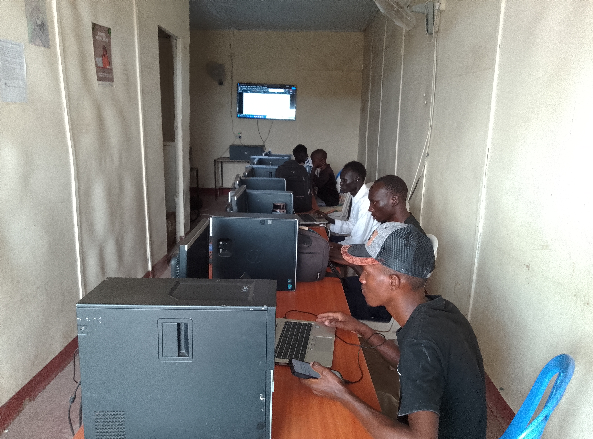

Case study · ICT training
KUA Initiative
Practical digital-skills learning designed to help young people build confidence, use common tools and prepare for opportunities.

Project overview
Digital skills taught for real use.
KUA Initiative is presented in Emmanuel’s portfolio as a community training programme. Emmanuel delivered practical ICT learning for young people, with an emphasis on confidence and usable skills.
The original problem
Digital access does not automatically create digital confidence.
Learners needed clear, hands-on guidance they could apply beyond the classroom. The training had to be approachable, paced for the group and relevant to real tasks.
Process
Demonstrate, practise, support.
- Identify participant needs and the tools available.
- Break topics into practical, understandable steps.
- Demonstrate each task before guided practice.
- Provide individual support and reinforce independent use.
Final solution
A practical learning environment.
- Hands-on ICT sessions
- Step-by-step instruction
- Skills practice
- Participant support
Tools used
Everyday computer and digital tools.
The existing project record does not list a complete curriculum or specific software. Those details should be added only after KUA Initiative or Emmanuel approves them.
Outcome
A programme record that can be documented more fully.
The existing portfolio states that 60+ youth were trained through KUA Initiative. Attendance records, dates, curriculum details and participant feedback are still needed before publishing a more detailed measurable-outcomes section.
Need practical ICT training for your group?
Start a project